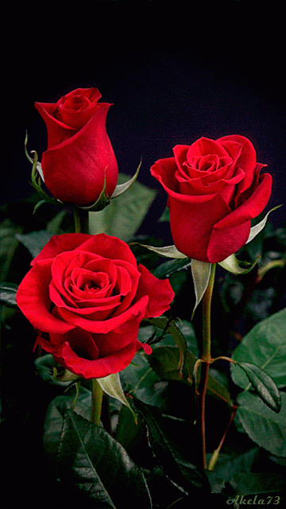

Hey Miss Night Owl! Happy Rose Day! Aaj socha thoda special tareeke se
wish karun. You bring so much light into my life, just like this rose,
you're beautiful and unique. Every time I talk to you, I feel like I'm
talking to the most amazing person. You just get me. Your late-night
chats are something I always look forward to. They make my day, or
should I say, my night!
I know you already know this, but I just want to say it again: I'll
always be that person in your life where you can truly be yourself, no
holding back. And you can always share anything with me, anything at
all. I might not have all the answers, but I'll never let you face
anything alone. That's a promise. I'm so lucky to have you in my life.
You're a true friend, and someone I admire a lot.
This rose is a small token of my appreciation for you. You deserve all
the happiness in the world. Just wanted to make sure you know. Hope
you have a beautiful and special Rose Day, Miss Night Owl!